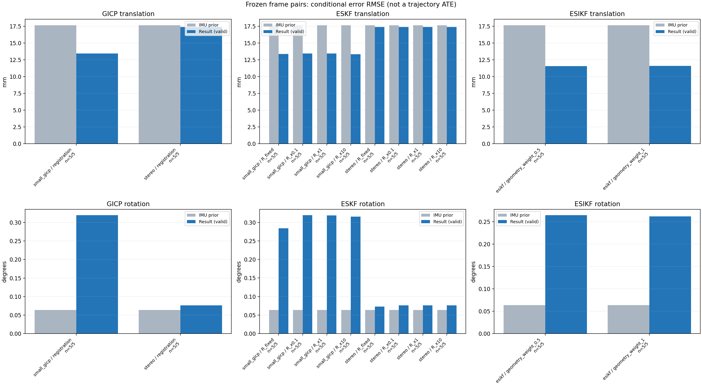

20261015_112845_yaw_left · depth=disparity_cache · cache=90f4812991bfdfd4352d
模型视差：/home/ubuntu22/slam/SIO_SLAM/models/tensorrt/disp_896x448_fp16.plan；engine SHA256=604cf6ac1f705c877260711730dd5d2d58c2a21f3020c03c668401ef7fb1e768。输入为生产裁剪与光照处理后的 RGB 0..255；此实验使用原始浮点像素视差，不应用完整前端的邻域视差后处理。
原始 ONNX SHA256：e9f49736a65d68d06681add463866b6defdf78fdd7f4f50f6cc941b682fdc0bc。
代价体图改写验证：ONNX Runtime 固定随机特征输入，最大绝对误差 0；该项检查图改写，完整模型精度仍需由录制数据评估。
配准代码版本：744ac2d993ae629b0cc44a3b1d995e04ab4fad48；观测生成版本：744ac2d993ae629b0cc44a3b1d995e04ab4fad48。
固定图像对与纯 IMU 先验；ESKF 回放固定 GICP 观测，ESIKF 直接读取点云。真值只用于此报告。
同时查看 converged 与 solver_status：上游默认 Stereo 在 max_iter / stopped_at_minimum 时也可能置 converged=true。valid 表示输入检查通过，不表示精度提升。欧氏 GICP 未提供独立的点距 RMSE，该列显示 NaN。
误差按每对图像的锚点计算，单位 m / degrees。此处 RMSE 不是全序列 ATE；末帧受同一锚点条件约束。NIS 与条件马氏距离是诊断量，少量相关图像对不能用于宣称协方差已校准。
全部指标 CSV · R / P / K 矩阵 CSV · Stereo 求解逐轮 CSV · ESIKF 逐轮 CSV · 配置快照 · 矢量图
| stage | method | variant | valid | total | translation RMSE (m) | rotation RMSE (deg) |
|---|---|---|---|---|---|---|
| esikf | esikf | geometry_weight_0.5 | 5 | 5 | 0.011558 | 0.26426 |
| esikf | esikf | geometry_weight_1 | 5 | 5 | 0.011572 | 0.26167 |
| eskf | small_gicp | R_fixed | 5 | 5 | 0.013371 | 0.28418 |
| eskf | small_gicp | R_x0.1 | 5 | 5 | 0.013426 | 0.31921 |
| eskf | small_gicp | R_x1 | 5 | 5 | 0.013416 | 0.31882 |
| eskf | small_gicp | R_x10 | 5 | 5 | 0.013322 | 0.31519 |
| eskf | stereo | R_fixed | 5 | 5 | 0.017361 | 0.072906 |
| eskf | stereo | R_x0.1 | 5 | 5 | 0.017363 | 0.076331 |
| eskf | stereo | R_x1 | 5 | 5 | 0.017363 | 0.076331 |
| eskf | stereo | R_x10 | 5 | 5 | 0.017363 | 0.076327 |
| gicp | small_gicp | registration | 5 | 5 | 0.013427 | 0.31925 |
| gicp | stereo | registration | 5 | 5 | 0.017363 | 0.076331 |

| stage | case | method | variant | status | solver_status | inliers | converged | covariance_convention | covariance_from_hessian | fitness | registration_rmse_m | prior_trans_error_m | result_trans_error_m | prior_rot_error_deg | result_rot_error_deg | R_rot_trace_rad2 | R_pos_trace_m2 | nis_regularized |
|---|---|---|---|---|---|---|---|---|---|---|---|---|---|---|---|---|---|---|
| gicp | static_start | small_gicp | registration | eligible | 23497 | 1 | right_source_body | 1 | 0.91749 | nan | 7.8303e-05 | 0.0097888 | 0.0034263 | 0.24698 | 4.0996e-07 | 1.1896e-05 | nan | |
| gicp | static_start | stereo | registration | eligible | max_iter | 23319 | 1 | left_target_body | 1 | 0.91104 | 0.16629 | 7.8303e-05 | 0.0015842 | 0.0034263 | 0.007973 | 2.9674e-09 | 5.8369e-08 | nan |
| gicp | sync_motion | small_gicp | registration | eligible | 23054 | 1 | right_source_body | 1 | 0.89343 | nan | 0.00039414 | 0.019021 | 0.010052 | 0.34503 | 4.9117e-07 | 1.6273e-05 | nan | |
| gicp | sync_motion | stereo | registration | eligible | max_iter | 22195 | 1 | left_target_body | 1 | 0.86151 | 0.14365 | 0.00039414 | 0.0013746 | 0.010052 | 0.026345 | 3.2106e-09 | 6.1788e-08 | nan |
| gicp | main_motion | small_gicp | registration | eligible | 18299 | 1 | right_source_body | 1 | 0.8353 | nan | 0.0033198 | 0.0080828 | 0.017216 | 0.21541 | 1.1747e-06 | 2.3592e-05 | nan | |
| gicp | main_motion | stereo | registration | eligible | max_iter | 16663 | 1 | left_target_body | 1 | 0.76601 | 0.10151 | 0.0033198 | 0.0042003 | 0.017216 | 0.013683 | 5.5108e-09 | 8.8021e-08 | nan |
| gicp | main_motion_long | small_gicp | registration | eligible | 13264 | 1 | right_source_body | 1 | 0.71439 | nan | 0.025379 | 0.014842 | 0.14096 | 0.30155 | 2.5121e-06 | 3.6621e-05 | nan | |
| gicp | main_motion_long | stereo | registration | eligible | max_iter | 12001 | 1 | left_target_body | 1 | 0.64895 | 0.11155 | 0.025379 | 0.026205 | 0.14096 | 0.092674 | 1.0281e-08 | 1.4617e-07 | nan |
| gicp | static_end | small_gicp | registration | eligible | 11656 | 1 | right_source_body | 1 | 0.84697 | nan | 0.03002 | 0.012576 | 0.004953 | 0.43843 | 4.3497e-06 | 2.8325e-05 | nan | |
| gicp | static_end | stereo | registration | eligible | max_iter | 6994 | 1 | left_target_body | 1 | 0.51073 | 0.17608 | 0.03002 | 0.028261 | 0.004953 | 0.14 | 1.5802e-08 | 1.7155e-07 | nan |
| eskf | static_start | small_gicp | R_x0.1 | updated | 23497 | 1 | right_source_body | 1 | 0.91749 | nan | 7.8303e-05 | 0.0097882 | 0.0034263 | 0.24698 | 4.0996e-08 | 1.1896e-06 | 0.015297 | |
| eskf | static_start | small_gicp | R_x1 | updated | 23497 | 1 | right_source_body | 1 | 0.91749 | nan | 7.8303e-05 | 0.0097825 | 0.0034263 | 0.24694 | 4.0996e-07 | 1.1896e-05 | 0.01529 | |
| eskf | static_start | small_gicp | R_x10 | updated | 23497 | 1 | right_source_body | 1 | 0.91749 | nan | 7.8303e-05 | 0.0097261 | 0.0034263 | 0.24659 | 4.0996e-06 | 0.00011896 | 0.015215 | |
| eskf | static_start | small_gicp | R_fixed | updated | 23497 | 1 | right_source_body | 1 | 0.91749 | nan | 7.8303e-05 | 0.0093842 | 0.0034263 | 0.2427 | 0.00022846 | 0.0012 | 0.014361 | |
| eskf | static_start | stereo | R_x0.1 | updated | max_iter | 23319 | 1 | left_target_body | 1 | 0.91104 | 0.16629 | 7.8303e-05 | 0.0015842 | 0.0034263 | 0.007973 | 2.9674e-10 | 5.8369e-09 | 0.00017778 |
| eskf | static_start | stereo | R_x1 | updated | max_iter | 23319 | 1 | left_target_body | 1 | 0.91104 | 0.16629 | 7.8303e-05 | 0.0015842 | 0.0034263 | 0.0079729 | 2.9674e-09 | 5.8369e-08 | 0.00017778 |
| eskf | static_start | stereo | R_x10 | updated | max_iter | 23319 | 1 | left_target_body | 1 | 0.91104 | 0.16629 | 7.8303e-05 | 0.0015842 | 0.0034263 | 0.0079728 | 2.9674e-08 | 5.8369e-07 | 0.00017778 |
| eskf | static_start | stereo | R_fixed | updated | max_iter | 23319 | 1 | left_target_body | 1 | 0.91104 | 0.16629 | 7.8303e-05 | 0.0015351 | 0.0034263 | 0.008534 | 0.00022846 | 0.0012 | 0.00016836 |
| eskf | sync_motion | small_gicp | R_x0.1 | updated | 23054 | 1 | right_source_body | 1 | 0.89343 | nan | 0.00039414 | 0.01902 | 0.010052 | 0.34493 | 4.9117e-08 | 1.6273e-06 | 0.45575 | |
| eskf | sync_motion | small_gicp | R_x1 | updated | 23054 | 1 | right_source_body | 1 | 0.89343 | nan | 0.00039414 | 0.01901 | 0.010052 | 0.34405 | 4.9117e-07 | 1.6273e-05 | 0.45379 | |
| eskf | sync_motion | small_gicp | R_x10 | updated | 23054 | 1 | right_source_body | 1 | 0.89343 | nan | 0.00039414 | 0.018927 | 0.010052 | 0.33581 | 4.9117e-06 | 0.00016273 | 0.43515 | |
| eskf | sync_motion | small_gicp | R_fixed | updated | 23054 | 1 | right_source_body | 1 | 0.89343 | nan | 0.00039414 | 0.019067 | 0.010052 | 0.22816 | 0.00022846 | 0.0012 | 0.18334 | |
| eskf | sync_motion | stereo | R_x0.1 | updated | max_iter | 22195 | 1 | left_target_body | 1 | 0.86151 | 0.14365 | 0.00039414 | 0.0013746 | 0.010052 | 0.026345 | 3.2106e-10 | 6.1788e-09 | 0.0027146 |
| eskf | sync_motion | stereo | R_x1 | updated | max_iter | 22195 | 1 | left_target_body | 1 | 0.86151 | 0.14365 | 0.00039414 | 0.0013745 | 0.010052 | 0.026344 | 3.2106e-09 | 6.1788e-08 | 0.0027145 |
| eskf | sync_motion | stereo | R_x10 | updated | max_iter | 22195 | 1 | left_target_body | 1 | 0.86151 | 0.14365 | 0.00039414 | 0.0013741 | 0.010052 | 0.026336 | 3.2106e-08 | 6.1788e-07 | 0.0027135 |
| eskf | sync_motion | stereo | R_fixed | updated | max_iter | 22195 | 1 | left_target_body | 1 | 0.86151 | 0.14365 | 0.00039414 | 0.0013255 | 0.010052 | 0.014523 | 0.00022846 | 0.0012 | 0.0011431 |
| eskf | main_motion | small_gicp | R_x0.1 | updated | 18299 | 1 | right_source_body | 1 | 0.8353 | nan | 0.0033198 | 0.008082 | 0.017216 | 0.21538 | 1.1747e-07 | 2.3592e-06 | 0.044685 | |
| eskf | main_motion | small_gicp | R_x1 | updated | 18299 | 1 | right_source_body | 1 | 0.8353 | nan | 0.0033198 | 0.0080748 | 0.017216 | 0.21505 | 1.1747e-06 | 2.3592e-05 | 0.044612 | |
| eskf | main_motion | small_gicp | R_x10 | updated | 18299 | 1 | right_source_body | 1 | 0.8353 | nan | 0.0033198 | 0.0080054 | 0.017216 | 0.21183 | 1.1747e-05 | 0.00023592 | 0.043908 | |
| eskf | main_motion | small_gicp | R_fixed | updated | 18299 | 1 | right_source_body | 1 | 0.8353 | nan | 0.0033198 | 0.0080559 | 0.017216 | 0.17389 | 0.00022846 | 0.0012 | 0.03588 | |
| eskf | main_motion | stereo | R_x0.1 | updated | max_iter | 16663 | 1 | left_target_body | 1 | 0.76601 | 0.10151 | 0.0033198 | 0.0042003 | 0.017216 | 0.013683 | 5.5108e-10 | 8.8021e-09 | 0.00015397 |
| eskf | main_motion | stereo | R_x1 | updated | max_iter | 16663 | 1 | left_target_body | 1 | 0.76601 | 0.10151 | 0.0033198 | 0.0042003 | 0.017216 | 0.013683 | 5.5108e-09 | 8.8021e-08 | 0.00015396 |
| eskf | main_motion | stereo | R_x10 | updated | max_iter | 16663 | 1 | left_target_body | 1 | 0.76601 | 0.10151 | 0.0033198 | 0.0042003 | 0.017216 | 0.013681 | 5.5108e-08 | 8.8021e-07 | 0.00015395 |
| eskf | main_motion | stereo | R_fixed | updated | max_iter | 16663 | 1 | left_target_body | 1 | 0.76601 | 0.10151 | 0.0033198 | 0.0041996 | 0.017216 | 0.011565 | 0.00022846 | 0.0012 | 0.00012592 |
| eskf | main_motion_long | small_gicp | R_x0.1 | updated | 13264 | 1 | right_source_body | 1 | 0.71439 | nan | 0.025379 | 0.014841 | 0.14096 | 0.30149 | 2.5121e-07 | 3.6621e-06 | 0.037422 | |
| eskf | main_motion_long | small_gicp | R_x1 | updated | 13264 | 1 | right_source_body | 1 | 0.71439 | nan | 0.025379 | 0.014824 | 0.14096 | 0.30101 | 2.5121e-06 | 3.6621e-05 | 0.037302 | |
| eskf | main_motion_long | small_gicp | R_x10 | updated | 13264 | 1 | right_source_body | 1 | 0.71439 | nan | 0.025379 | 0.014663 | 0.14096 | 0.29638 | 2.5121e-05 | 0.00036621 | 0.036147 | |
| eskf | main_motion_long | small_gicp | R_fixed | updated | 13264 | 1 | right_source_body | 1 | 0.71439 | nan | 0.025379 | 0.01481 | 0.14096 | 0.277 | 0.00022846 | 0.0012 | 0.03094 | |
| eskf | main_motion_long | stereo | R_x0.1 | updated | max_iter | 12001 | 1 | left_target_body | 1 | 0.64895 | 0.11155 | 0.025379 | 0.026205 | 0.14096 | 0.092674 | 1.0281e-09 | 1.4617e-08 | 0.0035718 |
| eskf | main_motion_long | stereo | R_x1 | updated | max_iter | 12001 | 1 | left_target_body | 1 | 0.64895 | 0.11155 | 0.025379 | 0.026205 | 0.14096 | 0.092674 | 1.0281e-08 | 1.4617e-07 | 0.0035718 |
| eskf | main_motion_long | stereo | R_x10 | updated | max_iter | 12001 | 1 | left_target_body | 1 | 0.64895 | 0.11155 | 0.025379 | 0.026205 | 0.14096 | 0.092666 | 1.0281e-07 | 1.4617e-06 | 0.0035712 |
| eskf | main_motion_long | stereo | R_fixed | updated | max_iter | 12001 | 1 | left_target_body | 1 | 0.64895 | 0.11155 | 0.025379 | 0.026203 | 0.14096 | 0.084712 | 0.00022846 | 0.0012 | 0.0029211 |
| eskf | static_end | small_gicp | R_x0.1 | updated | 11656 | 1 | right_source_body | 1 | 0.84697 | nan | 0.03002 | 0.012575 | 0.004953 | 0.43841 | 4.3497e-07 | 2.8325e-06 | 0.013446 | |
| eskf | static_end | small_gicp | R_x1 | updated | 11656 | 1 | right_source_body | 1 | 0.84697 | nan | 0.03002 | 0.012565 | 0.004953 | 0.43822 | 4.3497e-06 | 2.8325e-05 | 0.013429 | |
| eskf | static_end | small_gicp | R_x10 | updated | 11656 | 1 | right_source_body | 1 | 0.84697 | nan | 0.03002 | 0.012468 | 0.004953 | 0.4364 | 4.3497e-05 | 0.00028325 | 0.013265 | |
| eskf | static_end | small_gicp | R_fixed | updated | 11656 | 1 | right_source_body | 1 | 0.84697 | nan | 0.03002 | 0.012575 | 0.004953 | 0.43113 | 0.00022846 | 0.0012 | 0.012852 | |
| eskf | static_end | stereo | R_x0.1 | updated | max_iter | 6994 | 1 | left_target_body | 1 | 0.51073 | 0.17608 | 0.03002 | 0.028261 | 0.004953 | 0.14 | 1.5802e-09 | 1.7155e-08 | 0.0013514 |
| eskf | static_end | stereo | R_x1 | updated | max_iter | 6994 | 1 | left_target_body | 1 | 0.51073 | 0.17608 | 0.03002 | 0.028261 | 0.004953 | 0.14 | 1.5802e-08 | 1.7155e-07 | 0.0013513 |
| eskf | static_end | stereo | R_x10 | updated | max_iter | 6994 | 1 | left_target_body | 1 | 0.51073 | 0.17608 | 0.03002 | 0.028261 | 0.004953 | 0.13999 | 1.5802e-07 | 1.7155e-06 | 0.0013513 |
| eskf | static_end | stereo | R_fixed | updated | max_iter | 6994 | 1 | left_target_body | 1 | 0.51073 | 0.17608 | 0.03002 | 0.028261 | 0.004953 | 0.13778 | 0.00022846 | 0.0012 | 0.0012912 |
| esikf | static_start | esikf | geometry_weight_1 | updated | 23390 | 1 | 1 | 0 | 0 | 7.8303e-05 | 0.0042793 | 0.0034263 | 0.022234 | 4.4464e-08 | 8.4612e-07 | nan | ||
| esikf | static_start | esikf | geometry_weight_0.5 | updated | 23390 | 1 | 1 | 0 | 0 | 7.8303e-05 | 0.0042838 | 0.0034263 | 0.022271 | 8.89e-08 | 1.6912e-06 | nan | ||
| esikf | sync_motion | esikf | geometry_weight_1 | updated | 23397 | 1 | 1 | 0 | 0 | 0.00039414 | 0.010664 | 0.010052 | 0.0779 | 4.7327e-08 | 8.4095e-07 | nan | ||
| esikf | sync_motion | esikf | geometry_weight_0.5 | updated | 23398 | 1 | 1 | 0 | 0 | 0.00039414 | 0.010189 | 0.010052 | 0.075601 | 9.4363e-08 | 1.6714e-06 | nan | ||
| esikf | main_motion | esikf | geometry_weight_1 | updated | 17557 | 1 | 1 | 0 | 0 | 0.0033198 | 0.0056179 | 0.017216 | 0.13093 | 1.0472e-07 | 1.0532e-06 | nan | ||
| esikf | main_motion | esikf | geometry_weight_0.5 | updated | 17569 | 1 | 1 | 0 | 0 | 0.0033198 | 0.0062632 | 0.017216 | 0.1569 | 2.1033e-07 | 2.1014e-06 | nan | ||
| esikf | main_motion_long | esikf | geometry_weight_1 | updated | 12963 | 1 | 1 | 0 | 0 | 0.025379 | 0.021915 | 0.14096 | 0.1077 | 1.5109e-07 | 1.1935e-06 | nan | ||
| esikf | main_motion_long | esikf | geometry_weight_0.5 | updated | 12963 | 1 | 1 | 0 | 0 | 0.025379 | 0.021932 | 0.14096 | 0.10734 | 3.0182e-07 | 2.3863e-06 | nan | ||
| esikf | static_end | esikf | geometry_weight_1 | updated | 9220 | 1 | 1 | 0 | 0 | 0.03002 | 0.0050662 | 0.004953 | 0.55411 | 1.5137e-07 | 9.0411e-07 | nan | ||
| esikf | static_end | esikf | geometry_weight_0.5 | updated | 9221 | 1 | 1 | 0 | 0 | 0.03002 | 0.0050522 | 0.004953 | 0.5539 | 3.0246e-07 | 1.8063e-06 | nan |